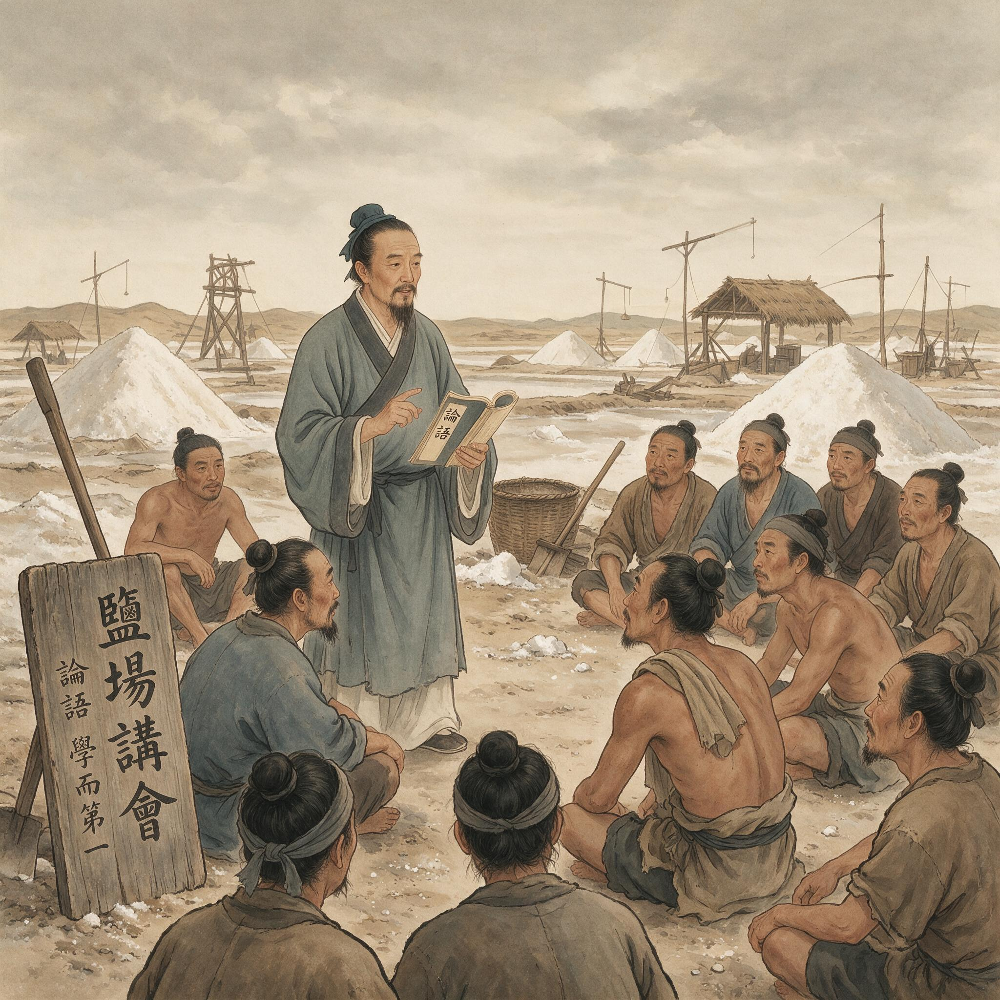

第 28 章
晚明清流与狂禅之辨
从泰州学派的讲学到狂禅争议的蔓延，晚明思想界的裂痕已清晰可见。顾宪成在《小心斋札记》中写下了这样的批判：“无善无恶心之体”，此语最毒，天下聪明人，皆被此语误却。这句话写在顾宪成《小心斋札记》第十一卷的某一页上。
墨迹早已干透，但每一个字都带着一种压抑不住的恼怒。不是论辩时那种从容的驳诘，而是一个人反复思量之后终于确认：他面对的不是一个可以修正的理论偏差，而是一个从根子上就长歪了的东西。

泰州学派王艮在盐场向灶丁讲学
AI 生成插图，非史实影像。
顾宪成在下面继续写道：说“无善无恶”，看似高明，实则取消了善恶的分际；善恶分际一取消，则“善可不讲，恶可不辨”；善可不讲则礼法废，恶可不辨则纲纪弛。他用了四个字来概括这个后果——“猖狂无忌”。
这四个字不是随口骂人的话。在万历二十八年顾宪成的词汇表里，“猖狂”指的是行为失去了外在约束之后呈现出的那种肆无忌惮的状态，“无忌”则是对这种状态的心理描述——不是不知道有规范，而是不在乎。一个人不在乎礼法、不在乎清议、不在乎身后名，他只在乎自己内心那一点“良知”的判断。而那个“良知”既然被宣布为无善无恶的本体发用，它就可以为任何行为提供正当性。
顾宪成写下这些文字的时候，他已经在无锡家中聚徒讲学多年。东林书院尚未正式修复——那是万历三十二年的事——但东林学派的雏形已经在他家中形成。来听他讲学的人，有赋闲的官员，有落第的举子，也有对时局不满的年轻士子。他们带着各自的焦虑聚在一起，听顾宪成讲《大学》、讲《中庸》、讲朱子的格物之说，也听他分析朝政得失、地方利弊。
在这些讲学中，有一个话题被反复提起：为什么万历朝的士风越来越坏？为什么那些自称读圣贤书的人，做出来的事却越来越没有底线？顾宪成的回答逐渐聚焦到一个点上：王学末流的“无善无恶”之说。
他不是第一个批评王学的人。早在嘉靖年间，朝廷就曾下令禁毁王阳明的著作，禁设书院讲学。张居正执政时期，禁学令执行得尤为严厉，天下书院几乎被拆毁殆尽。但那些禁令针对的是心学的外部传播渠道，而不是它的内在逻辑。顾宪成要做的是从根子上驳倒“无善无恶”这四个字。他在《小心斋札记》中反复论证：心体不可能无善无恶。
如果心体无善无恶，那么孟子说的“性善”就站不住脚；如果性不是善的，那么儒家整个道德哲学的基础就塌了。
这个论证在哲学上是否站得住脚，是另一个问题。但顾宪成的关切从来不只是哲学的。他关心的是一套学说落到人间之后产生的实际后果。
他在札记中记录了大量他所见所闻的事例：某位自称王门后学的官员，在任上不理政务，终日与门生清谈良知，地方赋税积欠三年不追，水利失修，百姓流离；某位以“狂者”自居的举人，在乡里不守丧礼，父丧期间饮酒赋诗，别人规劝他，他说“哀戚在心不在形式”；某位信奉心学的生员，在县学里公开顶撞教官，说“良知高于功令”，教官拿他毫无办法。
这些事例的真伪如今已难以一一核实。顾宪成在札记中记录它们时，未必都经过严格的考订，有些可能是辗转听闻。但重要的是，这些事例反映了一种正在晚明社会中蔓延的焦虑：当“致良知”被理解为听从内心直觉的指令，当“率性”被理解为不加约束地表达自我，社会秩序的根基就开始松动。顾宪成不是唯一感到焦虑的人。
与他同时代的高攀龙，在《高子遗书》中写下了几乎完全一致的判断。高攀龙说，他年轻时也读过王阳明的书，一度被其高明所吸引，但后来看到那些自称王门后学的人“率意妄行，无所忌惮”，他才意识到问题出在立说本身。高攀龙的用语比顾宪成更严厉，他直接称之为“洪水猛兽”。
东林学派对王学末流的批判，从一开始就不只是学术论辩。它是对一个正在发生的道德失序现象的回应。这个现象，用当时人自己的话来描述，就是“狂禅”。
“狂禅”这个词的发明权归属已不可考，但它在万历年间被广泛使用，用来描述那些以心学为名、行为乖张、蔑视礼法的人。这个词的构成本身就透露了当时士大夫阶层的判断：这些人不是正统的儒者，也不是正统的禅僧，而是把禅宗的“直指本心”和儒家的“良知”学说混在一起，弄出了一个不儒不禅、既狂且空的东西。被贴上“狂禅”标签的人，并不都接受这个标签。他们中的许多人认为自己才是真正继承了王阳明精神的人。
在他们看来，王阳明一生行事就是“狂者进取”的典范——他敢于在正德年间上疏弹劾刘瑾，敢于在宸濠之乱中独断专行，敢于在嘉靖初年拒绝朝廷征召。这些行为放在当时都是惊世骇俗的，都突破了常规的礼法约束。如果王阳明可以这样做，为什么他的后学不可以？这个反问是有力的。
它触及了心学内部一个根本性的紧张：心学强调个体良知的自足性，这本身就蕴含着突破外在规范的可能性。王阳明本人一生都在小心翼翼地平衡这种可能性与现实秩序之间的冲突，他用“事上磨练”来约束“致良知”的冲动，用“为善去恶”来补充“无善无恶”。但平衡是个人性的，它依赖于王阳明本人的判断力和分寸感。一旦这个人不在了，平衡就难以维持。泰州学派做的正是打破这个平衡。
王艮在安丰场讲“百姓日用即道”，把圣人之学从书斋拉到了盐灶旁。这个动作的意义，要到几十年后才完全显现出来。王艮的弟子颜钧在江西讲学时，公开宣称“放心为善”——不是小心谨慎地省察内心，而是把心放开，让它直接去行善。
这个“放”字，在程朱理学的工夫论传统中是大忌。程朱讲“收放心”，是要把放逸出去的心收回来，用敬和格物的工夫把它约束住。颜钧把这个逻辑颠倒了过来：心本来就是善的，不需要收，你只要不压制它，它自然就会去行善。那些读书、静坐、省察的工夫，在他看来不是帮助，而是障碍。
颜钧的讲学风格极具煽动力。据同时代人的记载，他在讲学时“赤身露顶，不衣不冠”，举止放诞，不拘形迹。他的听众不只是士子，还有农民、工匠、商贩。他告诉这些人：你们不需要读四书五经，不需要考功名，你们本来就是圣人。这种承诺的力量，对于被正统教育体系排斥在外的底层民众来说，是难以抗拒的。
颜钧最著名的弟子是何心隐。何心隐本名梁汝元，江西永丰人，出身富户。他听了颜钧的讲学之后，放弃科举，散尽家财，在自己的家族内部建立了一个取消差等辈分的共同体。他称之为“以身为家”——不是以血缘为家，而是以志同道合者的聚合为家。在这个共同体里，传统的父子、兄弟、夫妇关系被师友关系取代。
这种做法在当时引起的震动，不亚于宣布废除家族制度。何心隐的行为很快引起了官府的注意。地方官弹劾他“妖言惑众”，把他关进监狱。他在狱中继续讲学，狱卒成了他的听众。出狱后他北上京师，结交士大夫，议论朝政，最终在万历七年被张居正下令杖杀于狱中。
何心隐之死没有吓退追随者，反而使他成为一个象征。他的朋友李贽在祭文中称他为“豪杰之士”，说他“以友朋为性命”，死得其所。李贽是泰州学派在晚明最著名也最极端的传人。他比何心隐走得更远。
他在麻城芝佛院落脚，剃发留须，既不完全是僧人，也不完全是儒者。他公开招收女弟子，与妇人书信论学。他在《焚书》中写下了那句被后世无数人征引的话：“穿衣吃饭，即是人伦物理。除却穿衣吃饭，无伦物矣。”
这句话出自李贽《答邓石阳》一信。上下文是在讨论“道”究竟在哪里。李贽说，世间的人都在高谈性命、空议玄虚，却不知道真正的道理就在最平常的吃饭穿衣之中。离开这些日常之事，另外去找什么“天理”“良知”，那是缘木求鱼。
表面上看，这句话和王艮的“百姓日用即道”一脉相承。但仔细分辨，两者之间有一个关键的位移。王艮说“即道”，意思是百姓日用之中包含着道，道不离日用，这仍然承认道是一个高于日用的规范标准。李贽说“即是”，意思更激进：穿衣吃饭本身就是道，除此之外别无道。这个“即”字抹掉了道与日用之间最后一点张力。
如果穿衣吃饭就是人伦物理的全部，那么判断穿衣吃饭之是非的标准在哪里？李贽的回答是：在每个人的“童心”。他在《童心说》中写道：“夫童心者，绝假纯真，最初一念之本心也。”守住这颗童心，不做假，不矫饰，就是真人。至于礼法、经典、圣贤之言，如果与童心不合，那就是假话。从王艮到颜钧，从何心隐到李贽，这条线索的逻辑推进异常清晰。
每一步都更彻底地消解了外在规范的内在依据，每一步都更坚定地把道德判断的权力交还给个体内心。泰州学派的传人们不是在歪曲王阳明的学说，他们是在沿着“致良知”的内在逻辑向前走，走到王阳明本人可能都不会认同的地方。
王阳明在“天泉证道”那个夜晚，面对王畿和钱德洪的争论，给出了一个调和性的回答：利根之人可以从“无善无恶”直入心体，中根以下仍需“为善去恶”的工夫。这个回答本身就是一个妥协，它承认“无善无恶”之说有危险，需要用工夫来平衡。但泰州学派拒绝这个妥协。他们不要平衡，他们要彻底。
顾宪成在东林书院批判王学，针对的正是这种彻底性。他在《小心斋札记》中逐条驳斥“无善无恶”之说的危害，其论证逻辑可以归纳为三步。第一步，心体不可能无善无恶。顾宪成认为，如果说心之体无善无恶，那么性也是无善无恶的，这就等于否定了孟子以来的性善论传统。
第二步，即便承认心体无善无恶是一种高妙的境界描述，这个描述一旦被普通人当作行动指南，就会导致善恶标准的消解。
第三步，善恶标准消解之后，必然出现道德失序——人人都可以宣称自己的私欲就是良知，人人都可以打着“致良知”的旗号冲破礼法。这个论证的第三环，在万历二十八年那个时间节点上，已经不是一个理论推演，而是一个正在发生的事实。顾宪成在札记中记录的那些事例——官员不理政务、举人不守丧礼、生员顶撞教官——都是这个事实的碎片。把这些碎片拼在一起，他看到的是一个令人不安的图景：士大夫阶层正在失去对礼法秩序的敬畏，而心学的话语为这种失序提供了自我合理化的工具。
顾宪成的判断传到了王门后学的耳朵里。最先做出系统回应的，是王畿的再传弟子周汝登。周汝登当时正在南京讲学。他是嵊县人，万历五年进士，官至南京尚宝司卿。在学术谱系上，他属于王畿一脉，是“四无说”的忠实继承者。他听说顾宪成在无锡批判“无善无恶”之说，便写了一组题为《九谛九解》的文字，逐条反驳。
这组文字后来成为晚明思想史上最重要的论辩文献之一，因为它把双方的分歧推到了最根本的层面。
周汝登的核心论点是：顾宪成误解了“无善无恶”的含义。王阳明说“无善无恶心之体”，不是说善恶不存在，而是说心体本身超越了善恶的对立。就像一面镜子，镜子本身没有美丑，但能照出美丑。心体无善无恶，才能知善知恶。如果心体本身就有善恶，那它就成了一个固定的标准，反而无法灵活地判别具体情境中的善恶。
周汝登进一步指出，顾宪成担心的“猖狂无忌”并不是“无善无恶”之说的必然结果，而是某些人没有真正理解心体含义就妄自称用的后果。不能因为有人误用，就否定立说的本义。这个辩护在逻辑上是有力的。它把问题拉回到王阳明“四句教”的原始语境，试图证明“无善无恶”和“知善知恶”之间并不矛盾，而是体用关系。
但顾宪成不接受这个辩护。他在后续的札记中回应说：问题恰恰出在这个“体用关系”上。你说心体无善无恶，又说良知能知善知恶——那么良知和心体是什么关系？如果良知就是心体的发用，那么心体无善无恶，良知凭什么能知善知恶？这个“知”的标准从何而来？
标准若来自心体本身，心体就不可能是纯粹的无善无恶，它必须内在地包含着向善的倾向。标准若来自外部——比如经典、礼法、师友——那你就不能再说良知是自足的。
顾宪成的这个追问击中了王学体系中最脆弱的一环。“致良知”学说面临一个根本性的困难：良知既是判别善恶的能力，又是善恶标准的来源。当良知本身就是标准的来源时，不同人的良知判断发生冲突，以谁的为准？若每个人的良知都是自足的，那么圣人的良知和普通人的良知有没有高下之分？有，则等于承认良知有等级，这与“人人皆可为尧舜”的平等承诺相矛盾。没有，那么当两个人的良知判断相反时，如何裁决？
这个问题，王阳明在世时不是没有意识。他反复强调“事上磨练”的重要性，强调良知必须在具体事务中接受检验，就是要用实践来弥补良知自足性论证的不足。但泰州学派恰恰在这一点上背离了王阳明。他们不强调磨练，只强调自信。
王艮说“百姓日用即道”，颜钧说“放心为善”，李贽说“童心即真心”——每一步都在强化良知的当下直觉性，每一步都在弱化工夫的约束性。走到李贽那里，工夫几乎被完全取消：你不需要读书明理，不需要静坐省察，不需要师友规劝，你只需要回到你的童心，那颗“最初一念之本心”，它自然会告诉你什么是对、什么是错。万历三十年，李贽在狱中自刎而死。他的死没有终结这场辩论，反而让它变得更加激烈。
李贽的著作在民间继续流传，《焚书》《藏书》被一再翻刻。官方多次下令禁毁，但禁而不绝。东林书院的讲学活动也在扩大影响。顾宪成、高攀龙等人不仅在无锡讲，还通过书信与北京、南京、江西、湖广的士大夫群体保持着密切的联系。
他们逐渐形成了一个跨越地域的政治—学术网络，这个网络后来被称为“东林党”。东林派与王学末流之间的辩论，从学术层面蔓延到了政治层面。万历三十年代以后，朝廷上每一次重大的人事变动、政策争议，几乎都能看到这两股力量的对峙。
东林派主张整肃吏治、整顿财政、严格科举，在学术上强调格物致知、读书明理；他们的对手——被东林派称为“浙党”“楚党”“齐党”的那些人——则往往引用心学的话语，强调因时变通、不拘成法。这场对峙在万历末年达到了白热化，最终在天启年间演变为魏忠贤对东林党人的血腥清洗。
但把这场冲突简单地理解为“实学”与“空谈”之间的对立，会遮蔽很多重要的细节。东林派并不都是纯粹的程朱学者，他们中的一些人早年也出入王学，对心性之论并不陌生。顾宪成本人年轻时就读过王阳明的书，他在《小心斋札记》中对王学末流的批判，并非来自学派的偏见，而是来自对一个真实治理困境的观察。
他看到的不是抽象的理论分歧，而是具体的社会后果：当士大夫失去了对礼法秩序的敬畏，当每个人都相信自己的内心直觉高于外在规范，社会将如何治理？这个问题不是顾宪成一个人提出的。它是晚明整个士大夫阶层共同面对的困境。
万历朝是一个社会流动性急剧增强的时代，商业繁荣催生了一个庞大的城市市民阶层，印刷术的普及使得知识传播突破了传统的书院—科举渠道，各种“异端”思想在民间找到了大量受众。泰州学派的讲学活动正是在这个土壤上蓬勃生长的。
他们的听众不只是士子，还有商人、工匠、灶丁、甚至妇女。这种跨越阶层的思想传播，在明代以前是不可想象的。王艮当年在安丰场讲学，面对的正是这些被正统教育体系排斥在外的人。
他告诉他们：你们不需要读四书五经，不需要考举人进士，你们每天做的事——烧盐、贩盐、种田、织布——里面就包含着圣人之道。这个承诺的力量是巨大的。它给了底层民众一种此前从未有过的尊严感：你们和那些读书做官的人一样，都可以成为圣人。
但这种平等承诺一旦兑现，它带来的就不只是尊严感，还有对既有等级秩序的质疑。如果灶丁和进士在成圣的可能性上是平等的，那么他们在社会地位上的不平等还有什么依据？泰州学派没有直接回答这个问题，但他们的逻辑指向了这个方向。
何心隐的“以身为家”已经触及了宗法制度的核心，李贽的“穿衣吃饭即是人伦物理”也是把日常生活的正当性提升到了与经典同等的高度。
这些思想在民间传播开来之后，产生的影响远远超出了学术论辩的范围。晚明社会出现了大量以“讲学”为名的民间结社，这些结社往往游离于官方的里甲、保甲体系之外，形成了一种新的社会组织形式。地方官对这些结社既警惕又无奈——它们不是叛乱组织，没有武装对抗朝廷，但它们的存在本身就是对官方秩序的一种替代。
万历三十四年，南京礼部侍郎杨时乔上疏，请求朝廷严禁“异端邪说”，矛头直指李贽的著作和泰州学派的讲学活动。疏中列举了“邪说”的三大危害：一是“惑世诬民”，使得普通百姓不再相信圣贤经典；二是“乱礼逾制”，使得丧葬、婚嫁、祭祀等礼仪失去规范；三是“结党营私”，使得讲学场所成为议论朝政、批评官员的据点。这三条指控，每一条都对应着一个真实的治理难题。杨时乔的奏疏在朝廷引起了激烈争论。
支持禁学的人说，万历初年张居正禁毁天下书院，虽然手段刚猛，但确实遏制了“异端”的蔓延；张居正死后书院复兴，各种“邪说”也跟着卷土重来，现在必须再次收紧。
反对禁学的人则说，朝廷禁学有违祖宗“崇儒重道”的祖训，而且禁不胜禁——李贽的书越禁越传，讲学的人越禁越多，与其禁而不止，不如疏导利用。这场争论没有得出一个明确的结论。朝廷最终采取了一种折中的做法：不发布全国性的禁学令，但授权地方官对“妖言惑众”者进行惩处。这个模糊的政策给了地方官很大的裁量空间。有些地方官睁一只眼闭一只眼，任由讲学活动继续；有些地方官则借机打击异己，把学术分歧上升为政治案件。
万历三十七年，浙江巡按御史弹劾周汝登“倡为无善无恶之说，惑乱人心”，周汝登被迫辞官归里。这是东林派与王门后学之间论辩从学术层面上升到政治层面的一个标志性事件。周汝登离开南京之后，王门后学的讲学活动并没有停止。它们只是从大城市的书院转移到了更隐蔽的场所——私宅、寺庙、乡间的祠堂。
东林书院的讲学活动也在继续扩大影响。顾宪成在万历四十年去世之后，高攀龙接掌东林书院，把批判的矛头从王学末流扩展到了更广泛的社会政治问题。东林书院的会讲逐渐从一个学术活动演变为一个政治舆论中心，最终在万历末年引发了朝廷的强力反弹。这段历史的吊诡之处在于：东林派批判王学末流“空谈误国”，但他们自己最终也被对手贴上了同样的标签。
万历四十五年，东林党人被弹劾“聚徒讲学，讥议朝政”，弹劾者使用的语言和当年杨时乔弹劾泰州学派时如出一辙。学术辩论和政治斗争之间的界限，在晚明的舆论场中彻底模糊了。顾宪成在《小心斋札记》中写下那些批判王学末流的文字时，他大概没有预料到，这些文字日后会被反复征用，成为评判心学功罪的基本词汇库。
“狂禅”“空疏”“猖狂无忌”——这些词从他笔下流出，经过东林后学、清初诸儒、乾嘉考据家的不断转引和重新定义，最终凝固为对王学末流的标准判词。但顾宪成本人的思考比这些标签要复杂得多。
他不是简单地否定心学，而是在追问一个更根本的问题：当道德判断的权力从经典、礼法、制度转移到个体内心之后，社会秩序如何可能？这个问题，顾宪成没有给出完整的答案。东林书院的会讲在魏忠贤的屠刀下戛然而止，高攀龙投水自尽，书院被拆毁。
但问题留下来了。它沿着两条路径继续生长。一条路径在中国本土：清初诸儒在反思明亡教训时，把心学末流的“空谈误国”列为罪状之一，由此催生了以经史考据为方法的实学传统。另一条路径在隔海相望的日本：江户时代的儒者们读到王阳明的书，从中汲取的不是“无善无恶”的玄理，而是“知行合一”的行动力。到了十九世纪，幕末志士们把这种行动力从儒学的伦理框架中剥离出来，锻造成推翻旧秩序的革命兵刃。
无锡东林书院旧址的石碑上，刻着顾宪成手书的一副对联：“风声雨声读书声，声声入耳；家事国事天下事，事事关心。”这副对联后来被无数次引用，成了东林精神的象征。
但很少有人注意到，这副对联的上下联之间存在着一种微妙的紧张：上联写的是个人修养——听风听雨听读书，是一个人的内心世界；下联写的是公共关怀——家国天下，是士大夫的社会责任。如何从“声声入耳”的内心体悟，走到“事事关心”的公共行动，中间需要经过什么样的制度中介和规范约束——这个问题，正是顾宪成与王门后学之间辩论的核心所在。
这场辩论中双方使用的语言，在此后七百年间不断被重新征用。每一个时代的人都在用自己的困境重新激活这些词汇。“狂禅”在明末是道德失序的标签，在清初变成了亡国原因的诊断，在近代又成为批判传统思想空疏无用的武器。
“实学”也是一样——它在东林学派那里意味着经世致用的学问，在乾嘉考据家那里变成了训诂考证的方法，在晚清洋务派那里又变成了学习西方技艺的口号。词汇的意义在每一次征用中发生偏移，但每一次征用都绕不开万历年间那场辩论划定的基本问题域：个体内心的道德直觉与社会公共秩序之间，究竟应该是什么关系？
万历二十八年，顾宪成在无锡讲学时，他手中那本《小心斋札记》还只是一叠未刊的手稿。这些手稿在他生前没有完整出版，只是在小范围内传抄。他去世之后，弟子们把这些札记整理刊行，其中批判王学的段落迅速引起了注意。有人赞同，有人反驳，有人断章取义地引用。顾宪成已经无法控制这些文字如何被使用、被曲解、被征用。
思想一旦脱离源头开始流动，便不再能被其创造者所独占。东林书院的会讲散场之后，弟子们各自归去。有人回到家中继续抄录《小心斋札记》的段落，有人在灯下给远方的朋友写信讨论“无善无恶”的含义，有人把这些论辩带到了下一场科举考试的策论中。那些被禁毁的李贽著作，也在同样的夜晚被不同的人在不同的地方悄悄传抄。
一本《焚书》从南京传到苏州，从苏州传到徽州，每经过一次抄写，字句可能就有细微的出入，但“穿衣吃饭即是人伦物理”这句话始终保留着，成为那些被正统教育排斥在外的人反复咀嚼的精神食粮。辩论远未结束，它只是从讲学的厅堂转移到了更广阔也更不可控的民间。